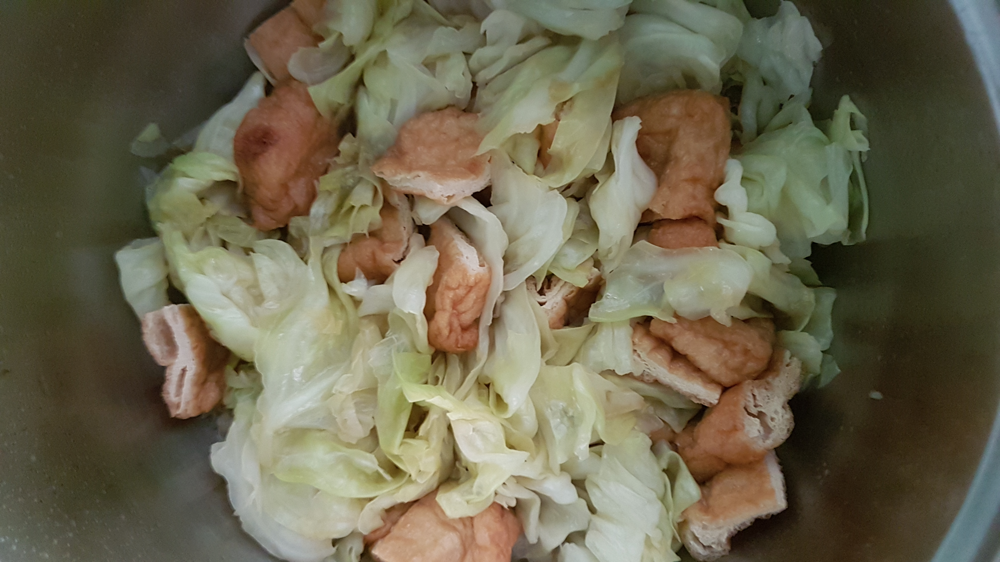
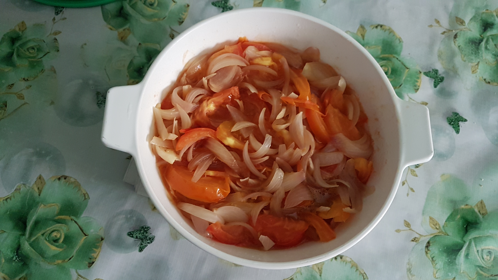

Cabbage with Dried Beancurd Puff
- Put sesame oil into frying pan
- Put cabbage and stir fry until cabbage softens
- Put some dried beancurd puff
- Add 1 tablespoon of light soy sauce and salt
- Ready to serve

Tomato with Red Onion
- Put sesame oil
- Add red onion and some salt
- Fry the red onion until it softens
- Put tomato cubes and some water
- Add 1 tablespoon of light soy sauce and salt
- Ready to serve

Steamed Egg with Wolfberries
- Crack 6 eggs and mix well
- Add 1 tablespoon of light soy sauce and some water. Mix well with eggs
- Spread sesame oil onto metal plate
- Pour the mixed eggs gently onto the metal plate
- Put some wolfberries on top of the eggs
- Steam for 10 minutes before serving